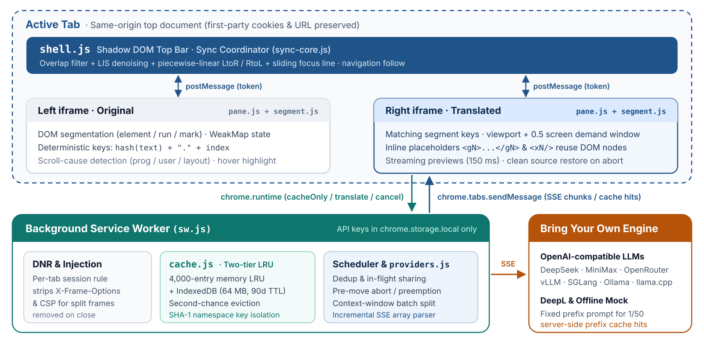

Browser translation tools generally fall into two camps: full-page replacement, which hides the original wording when a term looks off, and interleaved bilingual injection, which doubles paragraph height and pushes complex layouts out of alignment. When reading documentation, research blogs, or technical discussions, neither feels right. You want the original page untouched on one side, a clean translation on the other, and both scrolling together so your eye lands on the exact same paragraph when you glance across.
Duet-Translator is a zero-build, plain JavaScript Manifest V3 extension for Edge and Chrome built around that layout. Both panes load the real web page side by side, scroll in paragraph-level sync, translate only what is near your viewport, cache aggressively in IndexedDB and against LLM prefix caches, and work with any engine you supply—from self-hosted vLLM, SGLang, and Ollama endpoints to DeepSeek, MiniMax, OpenRouter, or DeepL.

Why Two Same-Origin Iframes
The first architectural decision is how to put two copies of a live web page in one tab. Several tempting shortcuts break on modern sites:
| Approach | Trade-off |
|---|---|
| Clone DOM for the right pane | CSS-in-JS styles injected via insertRule live outside DOM attributes; lazy images and JS interactions break |
| Reader mode extraction | Strips the site's typography, navigation, tables, and visual context |
| Two browser windows | Separate tabs and histories; awkward to resize and keep synchronized |
| Two iframes inside an extension page | Cross-origin: X-Frame-Options: SAMEORIGIN blocks loading, cookies become third-party, and the address bar shows chrome-extension:// |
| Top-level same-origin dual iframes (chosen) | First-party cookies and SAMEORIGIN work natively, the URL bar stays unchanged, and each pane renders at a true half-width viewport |
When you toggle split view in Duet-Translator, shell.js covers the active tab with a full-screen overlay and mounts two iframes pointing to the current URL. Both iframes inherit the site's origin and login session, and responsive layouts naturally adapt to half the window width without horizontal overflow.
Two safeguards make this work on strict sites. For domains returning X-Frame-Options: DENY or CSP frame-ancestors 'none' (such as GitHub repositories), the background Service Worker installs a temporary per-tab declarativeNetRequest session rule that strips only those framing response headers for subframes of that single tab, and removes the rule as soon as split view or the tab closes. Both iframes also carry sandbox without allow-top-navigation so frame-busting scripts cannot redirect the outer tab. Users who prefer strict CSP preservation can disable the header rule in settings.

shell.js coordinates scroll synchronization and navigation inside the active tab; pane.js and segment.js run inside each iframe; sw.js handles DNR rules, two-tier caching, batch scheduling, streaming SSE parsing, and engine adapters. Open full size
Paragraph-Aligned Scroll Synchronization
A naive scrollTop ratio fails almost immediately when translating between languages: Chinese prose is typically much more compact vertically than English, while technical explanations or expanded footnotes can run longer. Even if both panes start together, they drift apart by half a screen mid-article.
Segmentation and Deterministic Keys
Both panes run identical segmentation code (shared/segment.js) that walks the DOM and classifies translation units into three kinds: block element nodes containing only inline content (p, li, h1–h6, td, or text-only divs), inline run slices sitting directly alongside sibling blocks inside mixed containers (such as Hacker News comments) measured with DOM Range without mutating nodes, and non-translated mark anchors (pre, video, canvas) that share identical height across panes.
Non-content nodes (script, style, code, pre, textarea, svg, [translate=no], .notranslate, contenteditable) are skipped. Each unit receives a deterministic key computed from its normalized source text plus occurrence index on the page:
key = hash(normalizedSourceText) + "." + occurrenceIndexBecause the right pane translates in place and stores unit state exclusively in a WeakMap rather than writing attributes onto page nodes, its unit keys stay identical to the original left pane after translation finishes.
Overlap Filtering, LIS, and the Sliding Focus Line
Each pane converts its unit bounding boxes into scroll-content coordinates {k, t, b, n} (top, bottom, and character count) and reports them to shell.js via token-verified postMessage. The pure coordination module (shared/sync-core.js) turns those pairs into bidirectional scroll maps through four steps:
- Pair top and bottom edges. Matching keys produce two anchor points,
(tL, tR)and(bL, bR), so interpolation scales proportionally inside tall paragraphs—when a translated paragraph is twice as tall, scrolling halfway through the source lands halfway through the translation. - Filter side-by-side elements. Normal body paragraphs do not overlap vertically; floats, image captions, infobox rows, table cells in the same row, and multi-column cards do. Their anchors would cut across body paragraphs and distort intra-paragraph interpolation. Keeping only the segment with the largest character count in each vertically overlapping group drops maximum sync error on English Wikipedia from 292 px to 0 px and on Chinese Wikipedia from 185 px to 0 px.
- Denoise with LIS. After sorting anchors by left coordinate, taking the longest strictly increasing subsequence (LIS) of right coordinates strips out-of-order noise from sticky headers or A/B-tested sidebars that load differently between frames.
- Map along a sliding focus line. Rather than aligning only the top edge of the viewport (which prevents both panes from reaching the bottom together), the focus line moves smoothly from viewport top at scroll start to viewport bottom at scroll end:
progress r = t / (H - vh)
focusLine p = t + r * vh // top of viewport at top; bottom at bottom
mapped q = map(p) // piecewise-linear interpolation between anchors
target t' = q * (H' - vh') / H'Solving for t' guarantees that both panes hit top and bottom simultaneously while keeping the paragraph under your gaze aligned at every intermediate scroll position.
Scroll-Cause Classification and Oscillation Control
Because programmatic scrolling fires scroll events too, naive two-way listeners quickly ping-pong. Each pane classifies every scroll event by priority before reporting: prog (matches the last target sent by shell.js, checked first so recently active panes cannot steal leadership back), user (wheel, keyboard, touch, or pointer input within 700 ms; only takes control if its input timestamp is newer than the current driver), layout (DOM resize or translation insertion within 700 ms; the follower snaps back to alignment while the driver stays put), and other (such as in-page anchor jumps). On documentation sites or SPAs where window does not scroll, pane.js selects the largest scrollable overflow-y: auto|scroll element as the primary scroll container.
Preserving Formatting and Streaming Translations
Pages rely heavily on inline links, bold emphasis, inline code, and citation footnotes. Stripping them produces walls of plain text; asking an LLM to emit raw HTML invites broken tags and lost event handlers. Duet-Translator instead serializes inline DOM trees into compact numbered placeholders:
<p>See <a href="...">this reference</a> and the <code><p></code> element.</p>
-> "See <g1>this reference</g1> and the <x2/> element."<gN>...</gN> wraps translatable inline elements, and on write-back Duet-Translator reuses the original DOM node objects so SPA link handlers remain intact. Atomic nodes such as <code>, images, icons, and line breaks become <xN/> slots reinserted verbatim. Single-node wrappers like <li><a>Home</a></li> are peeled before sending to avoid unnecessary markup, and if a model scrambles placeholder nesting, the validator falls back cleanly to plain text plus trailing atomic nodes and refuses to persist the corrupted output in cache.
For OpenAI-compatible engines, requests stream a JSON string array over SSE. An incremental parser in sw.js strips reasoning <think>...</think> blocks and markdown code fences, tracks top-level commas to dispatch completed segments immediately via chrome.tabs.sendMessage, and also extracts partial unclosed JSON strings every 150 ms for intra-paragraph streaming previews. If a request is aborted or fails mid-stream, the pane reconstructs the original DOM from the serialized source so half-translated fragments are never left behind or re-sent as source text. If a batch still comes back with a mismatched length, the scheduler falls back to binary-splitting and eventually single-segment retries.
Disabling unnecessary chain-of-thought reasoning via extraBody makes a dramatic difference for interactive browsing. On the English Wikipedia Typography page (275 visible segments) with DeepSeek V4.1 Flash, disabling thinking ({"thinking":{"type":"disabled"}}) dropped single-paragraph latency from 5.1 s to 1.9 s and cut output tokens from 411 to 68 compared with reasoning_effort: low; on MiniMax M3.1 Flash, lowering reasoning effort cut latency from 9.1 s to 4.5 s and output tokens from 508 to 146.
On-Demand Scheduling, Caching, and Benchmarks
Rather than translating an entire document when a split opens, Duet-Translator translates a sliding window covering 0.25 screens above, the current viewport, and 0.5 screens ahead by default (configurable down to 0). Scrolling pauses requests until 300 ms after real user movement—ignoring layout-driven scroll adjustments caused by incoming translations—and in-flight requests for paragraphs that move more than 1.5 screens above or 2.5 screens below the viewport are aborted on the wire so the server stops generating.
Fast jump reading (skimming A → B → C in quick succession) introduces a subtler bottleneck: requests from B can still occupy every concurrency slot while technically staying inside the abort margin, starving C. Duet-Translator preempts older requests only if they were launched before the reader's most recent movement, never touching requests belonging to the current screen. Hidden elements, text already in the target language, and duplicate strings on the same page (such as repeated forum reply / share links) are deduplicated or skipped, and concurrent duplicate segments share the same in-flight promise. For small self-hosted models, setting contextTokens automatically splits batches before sending so prompt + input + estimated output fit safely inside the context window.
Two cache layers cut cost further:
- Local two-tier LRU + second-chance cache (
cache.js). Lookups hit a 4,000-entry in-memory LRU before querying IndexedDB (scoped by SHA-1 hash of engine, model, language pair, custom prompt hash, and source text, capped at 64 MB and 90-day TTL). Cache-only queries even run during scrolling across 3 screens above and 4 below so revisited pages appear instantaneously. Because a one-off whole-page translation can easily flush short navigation strings out of a small cache, eviction grants a second chance to entries hit at least twice by halving their hit counter and advancing their access timestamp. - Server-side prefix caching. Keeping the system prompt fixed at the front of every message list (with page title placed at the very end) lets providers with automatic prefix caching—such as DeepSeek at 64-token granularity—bill shared instructions at roughly 1/50 of normal input token pricing. Real cached/miss token counts from SSE
usagefields appear live in the top bar's green meter.
A synthetic 120-day browsing simulation (node test/bench/cache-policy.mjs across 25 sites with shared UI strings and periodic 6,000–15,000-segment whole-page flushes) verified the eviction design:
| Capacity & Workload | FIFO | LRU | LFU | LRU + 2nd Chance |
|---|---|---|---|---|
| 10k entries, daily browsing | 94.3% | 98.5% | 90.9% | 98.5% |
| 25k entries, daily browsing | 98.2% | 99.9% | 96.5% | 99.9% |
| 10k entries, +6k whole-page flush / 10d | 91.0% | 94.8% | 90.6% | 96.3% |
| 25k entries, +15k whole-page flush / 10d | 93.8% | 98.2% | 95.4% | 98.3% |
End-to-end latency and billing were measured in Playwright against a simulated OpenAI-compatible server (test/bench/bench.mjs, 600 ms TTFT, 45 tok/s streaming, DeepSeek V4 Flash pricing at $0.14 / $0.0028 / $0.28 per 1M miss / prefix-hit / output tokens):
| Scenario | Metric | Baseline | Optimized |
|---|---|---|---|
| Open page | First segment / Full 1st screen | 2.49 s / 5.73 s | 0.98 s / 3.31 s |
| Revisit page | 1st screen (all local cache) | 1.56 s | 0.15 s (0 requests) |
| Fast skim | Full screen after stop (segs / cost) | 7.8 s (30 / $0.000555) | 4.2 s (20 / $0.000501) |
| 150-comment forum | Segments sent / 1st screen | 110 / 8.04 s | 95 / 4.29 s |
| 4-scenario total | Simulated API cost | $0.003644 | $0.003544 (-2.7%) |
Adding pre-move jump preemption and 150 ms intra-paragraph streaming previews in a follow-up iteration reduced time until all visible segments begin showing translated text on rapid A → B → C jumps from 4.0–5.6 s down to 0.95–2.2 s at concurrency 6.
Real-Site Compatibility and Limitations
node test/e2e/compat.mjs verifies real websites in headless Chromium (1400×900, offline Mock engine, 7 × 650 px left-pane scrolls) and checks each pane's DOM independently at the focus line:
| Site | Split & Translate | Max Sync Error | Notes |
|---|---|---|---|
| Wikipedia (EN & ZH) | Pass | 0 px | Floats, infoboxes, and side captions filtered by overlap filter |
| GitHub repo / README | Pass | 0 px | Sends X-Frame-Options: DENY; handled by per-tab DNR rule |
| GitHub Docs & Python docs | Pass | 1 px | Code blocks remain untouched |
| MDN & React docs (Next.js) | Pass | 0 px | Client-side hydration preserved |
| Hacker News | Pass | 0 px | Table layout and mixed inline/block comment runs |
| arXiv HTML (ar5iv) | Pass | 0 px | MathML formulas and section numbering intact |
Several practical boundaries remain by design:
- Two independent page loads. Pages with randomized elements, A/B experiments, or stateful POST views may render slight differences between panes; LIS removes unmatched anchors, though differing blocks remain unaligned. Cookie consent banners also need to be dismissed in each pane.
- Strict bot protection and browser restrictions. Sites that trigger Cloudflare security challenges inside iframes (for example Medium when redirecting to subdomains) detect the challenge and report it in the top bar;
edge://, extension stores, and built-in PDF viewers forbid script injection. - Shadow DOM and script edge cases. Text inside closed or open Shadow DOM web components is not segmented. When targeting Simplified Chinese, pages written in Traditional Chinese are currently skipped by the CJK script detector.
- Verification scope. Automated suites run on headless Chromium; the Edge desktop build and live DeepL API adapter (requiring a paid/free DeepL key) have not yet been tested end-to-end manually.
Try It
There is no build step. Load the unpacked extension/ directory directly in Edge or Chrome:
git clone https://github.com/SuperFCR/Duet-Translator.git- Open
edge://extensions(orchrome://extensions) and enable Developer mode. - Click Load unpacked and select the
extension/folder inside the cloned repository. - In the welcome page or toolbar popup, pick an engine (DeepSeek V4.1 Flash, MiniMax M3.1 Flash, DeepL, or a self-hosted OpenAI-compatible server—for remote GPU boxes, forward with
ssh -L 8000:localhost:8000 gpu-hostand set base URLhttp://127.0.0.1:8000/v1), test the connection, and pressAlt+Shift+Y(⌥⇧Yon macOS) on any page.
To run the unit, UI, e2e, and simulated-LLM benchmark suites locally:
cd Duet-Translator/test
npm install
npx playwright install chromium
npm run test:unit
npm run test:e2e
node bench/bench.mjsCitation
Cited as:
Feng, Chaoran. (Nov 2026). Duet-Translator: Side-by-Side Web Translation with Paragraph-Aligned Scrolling. Chaoran Feng's Blog. https://www.falcary.com/blogs/duet-translator/.
Or
@article{feng2026duettranslator,
title = "Duet-Translator: Side-by-Side Web Translation with Paragraph-Aligned Scrolling",
author = "Feng, Chaoran",
journal = "falcary.com",
year = "2026",
month = "Nov",
url = "https://www.falcary.com/blogs/duet-translator/"
}References
- Duet-Translator source repository, github.com/SuperFCR/Duet-Translator.
- Duet-Translator architecture and benchmark log, docs/DESIGN.md and docs/COMPAT.md.
- Chrome Developers.
chrome.declarativeNetRequest(Manifest V3). - DeepSeek API Docs. Context Caching on Disk.
- DeepL API Docs. XML Handling in Translation Requests.